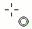
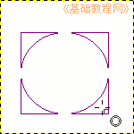
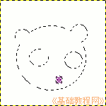
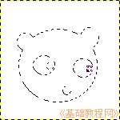
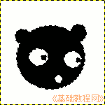

GIMP操作基础教程
作者：Teliute 来源：基础教程网
七、选取工具 返回目录
选取工具是一个常用的工具，包括框选和椭圆工具，用来选取不同的形状，选中的区域有一个虚线边框，下面我们来看一个练习；
1、启动GIMP
1）点上面板栏的菜单“应用程序－图像－GIMP图片编辑器”，就可以启动GIMP程序；
2）程序启动完成后，出来两个长条面板，如果还有一个“日积月累”面板，可以去掉下面的勾，点“关闭”；

2、选取工具
1）点菜单“文件－新建..”，新建一个宽度和高度都是300的空白文档，点“确定”打开一个空白文档窗口；
2）在工具箱面板上选择第二个椭圆工具，把鼠标移到画布上，鼠标指针后面带有一个圆圈小尾巴；
3）按住鼠标左键不松，向右下角拖动画一个大圆，拖的时候再按住Shift键可以画正圆，松开鼠标得到一个虚线圆框；
 
4）在工具箱面板下面的红色小方框选项中，选择第二个“叠加”模式，这样第二个选区会加在第一个上面，
在大圆的上面画两个小圆当耳朵，如果操作错了就按Ctrl＋Z键撤销一步；

5）再在工具箱面板下面的选项里，选择第三个“减去”模式，这样的选择会从原来的里面减掉一块，
在大圆里面画三个小圆，当眼睛和嘴巴，如果错了就按Ctrl＋Z键撤销一步；

6）再选择“叠加”模式，在眼睛里面画上两个眼珠，如果操作错了就按Ctrl＋Z键撤销一步；
7）在工具箱里面选择油漆桶工具 ，检查前景色是黑色，在选区中点一下，喷上黑色；
，检查前景色是黑色，在选区中点一下，喷上黑色；

以“小熊”为文件名，保存文件到自己的文件夹；
本节学习了GIMP的窗口和选项设置的 基本方法，如果你成功地完成了练习，请继续学习下一课内容；本教程由86团学校TeliuTe制作|著作权所有，商业用途请与作者联系
基础教程网：http://www.laxjyj.com/teliute/
美丽的校园……
转载和引用本站内容，请保留版权信息和本站链接。